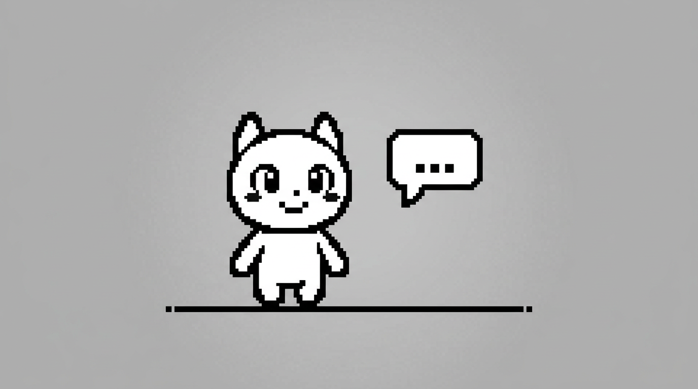

🎮 이 단원이 게임에서 쓰이는 곳 (언더테일·RPG)
덱 = 최근 본 아이템/방 목록, 스크롤 히스토리처럼 앞뒤로 넣고 빼는 경우에 씁니다. "뒤에만 넣고 앞에서만 뺀다"면 큐(대사 순서), "한쪽 끝에서만 넣고 뺀다"면 스택(메뉴 뒤로가기)과 같아요. RPG에서 최근 방문한 맵 5개를 덱으로 유지할 수 있어요.
덱(Deque)
Double-Ended Queue(더블 엔디드 큐)의 줄임말 덱(Deque, 덱)이에요. 앞과 뒤 둘 다 넣고 뺄 수 있는 구조예요. 스택이랑 큐를 합친 느낌입니다.
연산
- 앞에 넣기 / 뒤에 넣기
- 앞에서 꺼내기 / 뒤에서 꺼내기
활용
최근 본 목록, 스크롤 히스토리, 슬라이딩 윈도우 등 앞뒤로 자유롭게 넣고 빼는 경우에 씁니다.

🔄 유사 구조 비교: 스택 vs 큐 vs 덱
넣고 빼는 위치가 다르면 나오는 순서가 달라요. 아래 표로 차이를 비교해 보세요.
| 구분 | 스택 | 큐 | 덱 |
|---|---|---|---|
| 넣는 곳 / 빼는 곳 | 맨 위에만 넣고, 맨 위에서만 뺌 (한쪽 끝) | 뒤에 넣고, 앞에서 뺌 (한쪽은 넣기, 한쪽은 빼기) | 앞·뒤 둘 다 넣고 뺄 수 있음 |
| 나오는 순서 | LIFO — 나중에 넣은 게 먼저 나옴 | FIFO — 먼저 넣은 게 먼저 나옴 | 쓰는 방식에 따라 LIFO 또는 FIFO 또는 혼합 |
| 게임에서 쓰는 곳 | 메뉴 뒤로가기 (타이틀→메인→설정 push, 뒤로 누르면 pop) | 대사·이벤트 순서 (대사 enqueue, "다음" 누르면 dequeue) | 최근 본 목록, 슬라이딩 윈도우 |
| 파이썬 | list: append, pop() |
deque: append, popleft() |
deque: append, appendleft, pop, popleft |
문제 및 해설
문제 및 답 확인
답 보기
도전과제
풀어 본 뒤 정답을 펼쳐 확인하세요.
정답 보기
정답: 1, 2
뒤에 1,2 넣음 → [1, 2](앞=1, 뒤=2). 앞에서 꺼냄 → 1 나옴(첫 번째). 앞에 0 넣음 → [0, 2]. 뒤에서 꺼냄 → 2 나옴(두 번째). 따라서 꺼낸 값은 1, 2예요.
정답 보기
정답: 덱(Deque)
앞에 appendleft로 새 메뉴 추가, 길이가 3을 넘으면 뒤에서 pop으로 오래된 것 제거. 덱은 앞·뒤 연산이 모두 O(1)이라 적합해요.
문제 및 실습
앞/뒤에 넣고 앞/뒤에서 꺼내 보면서 덱 동작을 확인해 보세요. 아래에서 큐(deque) 예제를 바로 실행할 수 있어요.
📌 실습 전: 덱/큐 실습에서 쓰는 파이썬 API·함수
대응 덱은 "앞·뒤 모두 넣고 뺄 수 있는" 구조예요. 파이썬에서는 collections.deque로 큐·덱 연산을 둘 다 씁니다.
from collections import deque/deque(리스트)- 앞·뒤에서 O(1)로 넣고 뺄 수 있는 deque. 큐처럼 "뒤에 넣고 앞에서 뺄 때" 쓰기 좋아요.
덱.append(값)- 맨 뒤에 넣기 → enqueue에 대응해요.
덱.popleft()- 맨 앞에서 하나 꺼내서 반환 → dequeue에 대응해요. "left"는 앞쪽을 의미해요.
왜 list가 아니라 deque인가요? 리스트의 pop(0)은 비용이 커요. deque는 맨 앞·맨 뒤만 다루도록 구현돼 있어서 덱/큐 연산에 맞습니다.
👇 아래 코드가 실습창과 동일한 예제예요. 빈칸(_____)을 채운 뒤 아래 실습창에서 그대로 실행해 보세요.
# 큐: 먼저 넣은 게 먼저 나옴. popleft()로 앞에서 꺼냄
from collections import deque
q = deque(["첫번째", "두번째", "세번째"])
print("큐:", list(q))
# 빈칸: 큐의 맨 앞에서 하나 꺼내는 메서드 (pop / popleft / append 중)
out = q._____()
print("popleft() →", out)
print("남은 큐:", list(q))위 코드와 동일한 예제가 실습창에 불러와져 있어요. 빈칸을 채운 뒤 실행해 보세요.
위 실습은 이 강의(덱/큐)에서 배운 append·popleft를 쓰는 예제입니다. 손으로 해보려면 실습: 덱 (손으로 하기).
II단원 심화 실습 (4단계) — 이 페이지 안에서
아래는 이 단원(스택·큐)을 게임에 쓰는 방식으로 확장하는 실습이에요. 페이지 이동 없이 여기서 진행하면 됩니다.
- 1단계 스택: 메뉴 화면 이름을 append로 쌓고, pop으로 "뒤로" 할 때마다 꺼내 보기.
- 2단계 큐: 대사 줄을 append로 넣고, popleft()로 순서대로 꺼내 보기.
- 3단계 스택+큐를 각각 변수로 두고, "메뉴 들어가기 / 대사 다음"을 print로 시뮬레이션.
- 4단계 push/pop 순서를 코드로 써서 "들어가기·뒤로가기"가 스택에 어떻게 쌓이는지 확인.